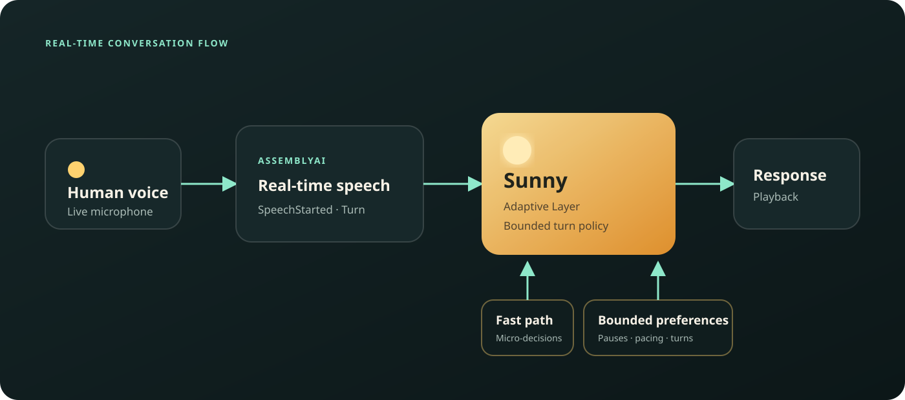

SpeechStarted
AssemblyAI detects the new human speech event.

MI-087 · AssemblyAI Voice Agent Hackathon
Sunny listens for more than words. It adapts to conversational rhythm, respects pauses, and yields the moment you want to speak.
The idea
Most assistants listen for content, then rush to answer. Sunny makes pacing, pauses, preferences, and interruption handling part of the interaction itself.
Submission film
95 seconds · Original animated product visualization
The film visualizes the product experience and verified runtime flow. It is not the literal human evidence recording.
How Sunny works
AssemblyAI’s real-time speech events give Sunny a reliable signal for listening, turn-taking, and interruption control.
Natural speech enters the live audio stream.
Real-time speech activity and turn events arrive as the conversation unfolds.
Persona, preferences, and a deterministic fast path shape the response.
Playback follows the user’s conversational rhythm.
Personalized rhythm
Sunny carries conversational preferences into each turn: how long to wait, how quickly to answer, and when silence means “thinking” instead of “finished.”
Architecture
A compact orchestration layer connects speech events, fast decisions, personalization, and playback.

Verified with a human in the loop
Physical human microphone → AssemblyAI v3 speech events → Sunny → speaker
Playback active → SpeechStarted → stop / duck → new turn → response
These statements reflect completed project validation. Private evidence, raw audio, and transcripts are intentionally excluded from this public demo.
Sunny responds not just to what you say —